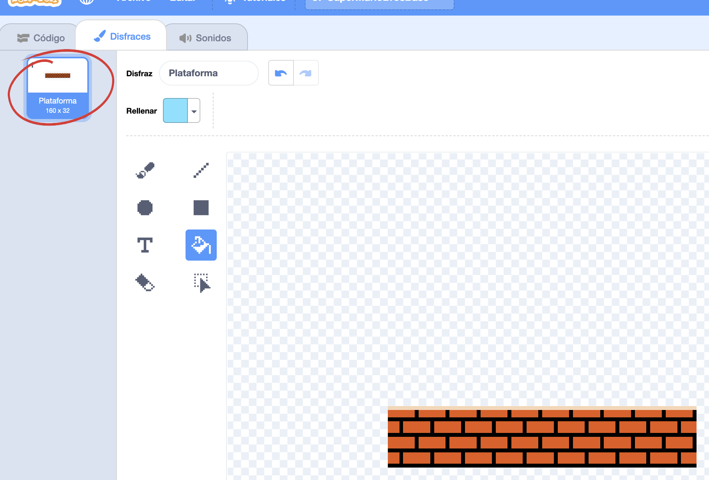
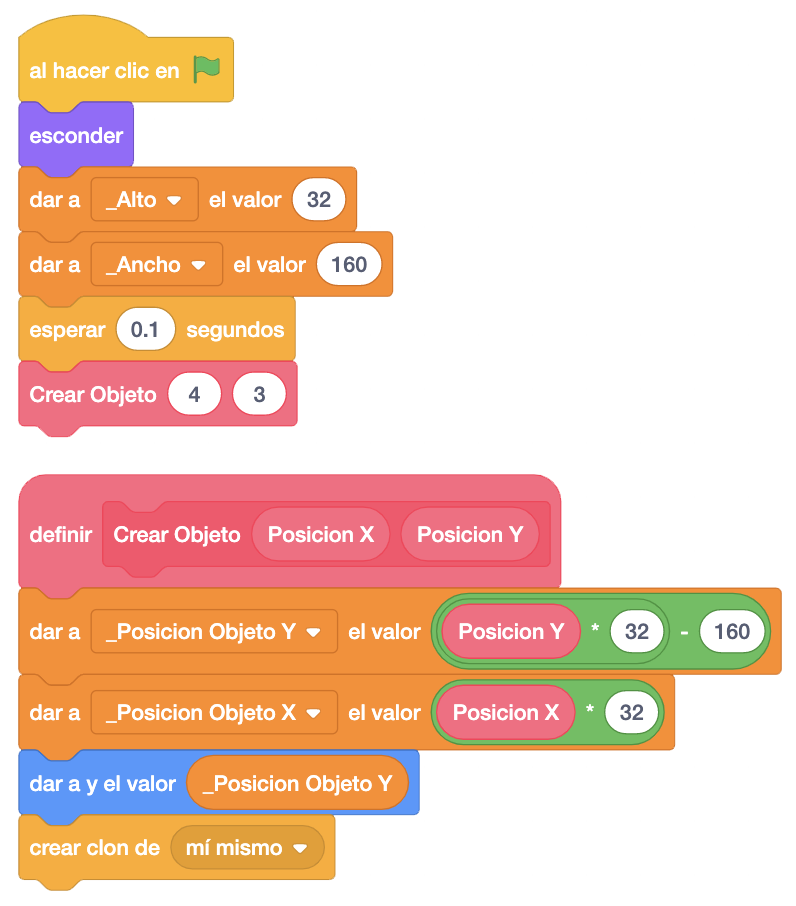
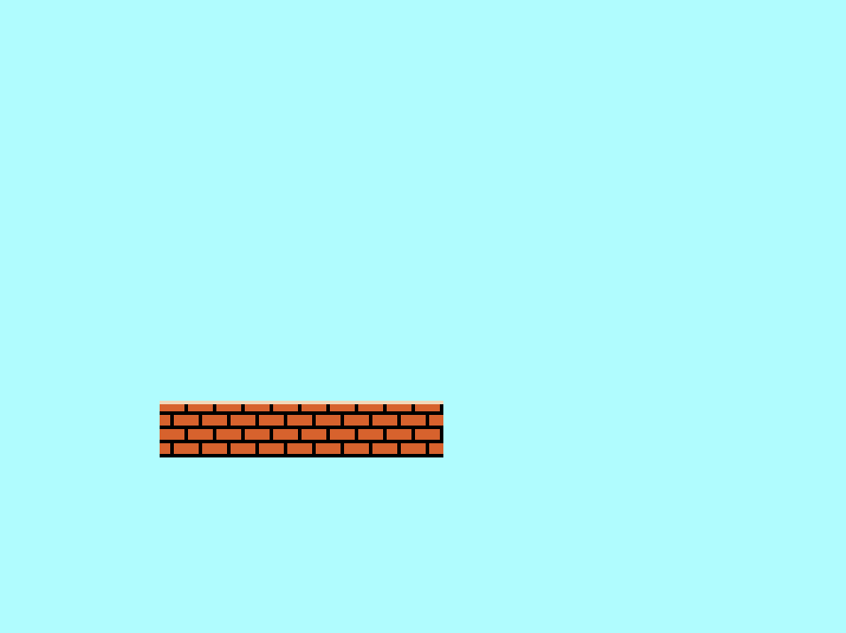
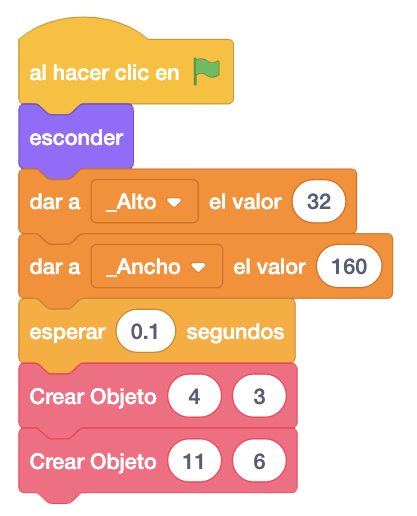
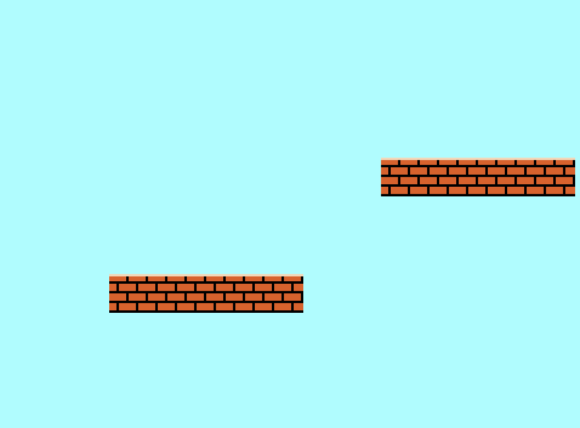

Para este juego vamos a necesitar varios objetos. Para el escenario y la creación de niveles, el suelo y las
plataformas.
Para la decoración y el funcionamiento de cada uno de los niveles, el bloque moneda, la moneda, la planta y
el tubo.
Para el cambio de nivel, el palo de la bandera, la bandera y el literal de siguiente nivel.
Para la gestión de las vidas y número de monedas conseguidos, los dígitos, el indicador de vidas de Mario y el
contador del numero monedas.
Además, le pondremos un logo de inicio y unas barras laterales para que el juego se vea correctamente y le
quitemos el mal funcionamiento de Scratch con el scroll.
También pondremos al enemigo por escelencia de Mario que es el Goomba.
Y como no, al personaje principal del juego, Mario.
Vamos a necesitar un único escenario de color azul para el fondo del juego.
Para descargar los objetos necesarios para el juego, lo haremos desde este link. Es un archivo comprimido con 16 objetos y 1 escenario. Lo descargaremos y lo descomprimimos en el directorio del alumno.
El objetivo del juego es llegar al final de la pantalla y subirte a la bandera para pasar al siguiente nivel.
Este juego, al ser el último que vamos ha hacer de una forma guiada, lo dividiremos en cuatro fases:
- Una primera fase en la que el alumno tiene que poner el suelo (varios clones), a Mario y una
plataforma, y programar que Mario se pueda mover a la derecha e izquierda y poder saltar sobre la plataforma.
- Una segunda fase en la que le daremos un documento donde tiene las especificaciones para que Mario
pueda subirse a esa plataforma y las tiene que implementar, siguiendo los pasos.
- Una tercera fase en la que partimos de un juego en el que el suelo, la plataforma y Mario, funcionan
perfectamente. Les explicamos el funcionamiento de lo que les hemos dado para que puedan seguir desarrollando
de la misma forma.
- Y una cuarta fase en la que tienen que ir añadiendo el resto de objetos.
En esta fase el alumno tiene que conseguir que Mario sea capaz de subirse a una plataforma y "hacerla dura"
tanto por arriba, por abajo, por la izquierda y por la derecha.
Además, tienen que implementar que en lugar de moverse Mario al pulsar las teclas derecha o izquierda, lo que
se mueva sea el escenario, simulando el scroling a traves de la pantalla. Mario siempre estará en la posicion
0 del eje "X".
Lo que queremos conseguir es lo siguiente:
Se puede hacer de múltiples formas y le dejaremos al alumno que sea creativo.
Habrá una serie de bloques que no podrán utilizar para hacer esta fase, como "Mover Pasos", "Deslizar", "Si
Toca Un Borde Rebotar", "Tocando El Color" y "Color Tocando".
Debemos conseguir un movimiento fluido y que se pueda subir a la plataforma independiente de donde esté
colocada en la pantalla.
Todos los alumnos tendrán que pasar por esta fase aunque les sea costoso. El tiempo dependerá de lo que
considere el monitor, teniendo en cuenta que el plazo máximo para dsarrollar esta parte sería de tres clases.
Este plazo se puede ampliar si el alumno lo solicita para terminarlo correctamente.
En esta segunda fase, se le dará al alumno un documento para que haga otra versión del juego siguiendo las
instrucciones dadas.
Estas instrucciones se seguirán completamente, teniendo las siguientes consideraciones de buenas prácticas:
- Las variables locales al objeto, se identificarán con un guión bajo delante del nombre.
- Todas las variables, mensajes, bloques y demás, deberán tener un nombre que identifiquen el contenido
o la acción que prependen realizar.
- Los bloques de instrucciones (pilas de instrucciones) se colocarán por orden de ejecución para una
mejor lectura del código.
El documento podemos descargarlo de
aquí
. Es un archivo pdf con las instrucciones a seguir.
En esta fase, le proporcionaremos al alumno la versión terminada del Mario con el suelo y la plataforma
funcionando perfectamente.
Este juego lo pueden descargar pinchando
aquí.
Le explicamos el funcionamiento del juego que le hemos pasado teniendo en cuenta lo siguiente.
A estos objetos, lo que hacemos al empezar es definir dos variables locales "_Alto" y "_Ancho" donde guardaremos las dimensiones de los objetos. Estas dimensiones podemos verlas en la pantalla de los disfraces del objeto.

A continuación crearemos el objeto en la pantalla. Para ello, vamos a utilizar un nuevo bloque "Crear Objeto"
al que pasaremos como argumento las posiciones "X" e "Y" donde queremos crear el objeto, pero referenciadas a
una matríz de 32 posiciones, para que sea más sencillo ubicar los objetos en la pantalla. La matriz sería de
32 posiciones porque la mayoría de los objetos tienen un tamaño de 32 o múltipo de 32, incluido Mario.
En el objeto "Crear Objeto", lo que haremos será guardar las posiciones "X" e "Y" del objeto en dos variables
locales, le damos las coordenadas al objeto y creamos el clon.

La pantalla nos quedaría así.

Si quisiéramos crear otra plataforma, bastaría con llamar al bloque "Crear Objeto" con las nuevas coordenadas y se crearía automáticamente.

La pantalla con dos plataformas nos quedaría así.

-

Y el juego quedaría así.
Para ver el juego terminado pulsa
aquí.
Para descargarte el juego terminado pulsa
aquí.